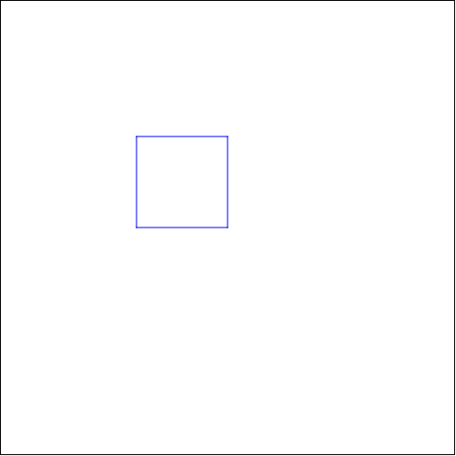
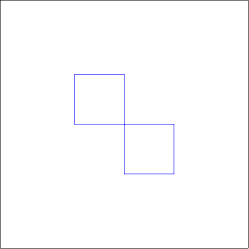
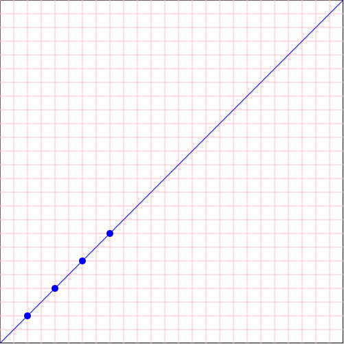

4.4 Racket Turtle esimerkkejä
4.4.1 Perusneliön piirtäminen
Jotta neliö voidaan piirtää, pitää ensin määritellä (define) lista, jossa tarvittavat komennot ovat, annamme listalle nimen neliö. Varsinainen piirtäminen suoritetaan draw funktion avulla, sille annetaan argumentiksi edellä määritelty komentolista.
(define neliö (list (forward 100) (turn-left 90) (forward 100) (turn-left 90) (forward 100) (turn-left 90) (forward 100)))
(draw neliö)

4.4.2 Neliön piirtäminen toistorakenteen avulla
Koska neliössä toistuu sama komentosarja monta kertaa, olisi parempi ensin määritellä tämä toistuva jakso. Annamme sille nimen sivu ja toistetaan sitä 4 kertaa repeat:in avulla.
(draw toisto-neliö)

4.4.3 Kahden neliön piirtäminen samaan kuvaan
Voimme yhdistää kaksi aikaisemmin määriteltyä kuviota samaan kuvaan. Määrittelemme uuden listan käskyjä siirry, jonka avulla Turtle siirtyy uuteen kohtaan ruudulla ja vaihtaa kynän värin punaiseen.
(define siirry (list (pen-up) (turn-right 90) (forward 100) (pen-down) (change-color "red")))
(define kaksi-neliötä (list neliö siirry neliö))
(draw kaksi-neliötä)

4.4.4 Neliön piirtäminen funktion avulla
Jotta voimme muutella neliön sivun pituutta, pitää määritellä funktio, jonka nimeksi annamme muuttuva-neliö. Tarvitsemme myös apufunktion, joka tuottaa muuttuvan pituisia sivuja, ja sen nimeksi annamme muuttuva-sivu. Muuttuja "x" kuvaa siis sivun pituutta. Lopuksi kutsumme määriteltyä funktiota muuttuava-neliö argumentilla 30 (x=30).
(define (muuttuva-sivu x) (list (forward x) (turn-left 90)))
(define (muuttuva-neliö x) (repeat 4 (muuttuva-sivu x)))
(draw (muuttuva-neliö 30))

4.4.5 Neliön piirtäminen koordinaattien avulla
Neliön voi piirtää myös komentamalla Turtlen kulkemaan tiettyjen koordinaattipisteiden kautta go-to komennon avulla. Jotta koordinaattipisteiden määrittely olisi helpompaa asetamme ensin kuvan origon lähtöpisteeseen set-origin komennolla.
(define koordinaatti-neliö (list (set-origin) (go-to 100 0) (go-to 100 100) (go-to 0 100) (go-to 0 0)))
(draw koordinaatti-neliö)

4.4.6 Neliön peilaaminen pisteen suhteen
Voimme piirtää kaksi neliötä niin, että toinen syntyy kun ensimmäinen neliö peilataan pisteen suhteen (mirron-x-on, mirron-y-on). Peilauspisteeksi tulee se piste, jossa peilauskomento on suoritettu (tässä esimerkissä kuvion lähtöpiste).
(define peilaus-neliö (list (mirror-x-on) (mirror-y-on) neliö))
(draw peilaus-neliö)

4.4.7 Neliön piirtäminen leimasintoiminnon avulla
Voimme aktivoida leimasintoiminnon stamper-on komennolla. Racket Turtle "leimaa" (piirtää) jokaisen siirtymän jälkeen komennolle annetun kuvan. Tässä esimerkissä leimasimen kuvaksi määritellään pieni punaisen ympyrä. Kynän voi halutessaan jättää myös alas.
(define leimasin-neliö (list (stamper-on LEIMASIN) (pen-up) neliö))
(draw leimasin-neliö)

4.4.8 Piirtoviivan paksuuden ja tyylin vaihtaminen
Viivan tyylin voi vaihtaa change-pen-style komennolla ja viivan paksuuden change-pen-size komennolla.
Huom! Tämä ei toimin WeSchemessä.
(define erikoinen-kynä-neliö (list (change-pen-size 5) (change-pen-style "dot") neliö))
(draw erikoinen-kynä-neliö)
4.4.9 Suoran piirtäminen taustaruudukon päälle
Ensimmäisenä piirrämme set-bg-grid toiminnolla taustaruudukon kuvalle. Siirrymme origoon (go-to 0 0) komennolla ja aktivoimme leimasimeksi sinisen ympyrän. Jotta leimasin merkitsee pisteitä (leimoja) suoralle siirrymme go-to komennolla suoralla sijaitsevien pisteiden kautta. Lopuksi leimasin toiminto otetaan pois päältä.
(define suora-koordinaatistossa (list (set-bg-grid 20 20 "pink") (pen-up) (go-to 0 0) (stamper-on (circle 5 "solid" "blue")) (pen-down) (go-to 40 40) (go-to 80 80) (go-to 120 120) (go-to 160 160) (stamper-off) (go-to 500 500)))
(draw suora-koordinaatistossa)

4.4.10 Pisteiden piirtäminen useamman eri leimasimen kanssa
(define LEIMASIMET (list (circle 10 "solid" "red") (star 10 "solid" "blue") (circle 10 "solid" "green") (star 10 "solid" "yellow") (circle 10 "solid" "black")))
(define suora-leimasimilla (list (pen-up) (go-to-origin) (turn-right 45) (stamper-on LEIMASIMET) (repeat 8 (forward 50))))
(draw suora-leimasimilla)

4.4.11 Kuvan koon ja taustavärin muuttaminen sekä taustakuvan asettaminen
Taustavärin voi vaihtaa change-bg-color komennolla ja sen päälle voi asetta lisäksi kuvan taustakuvaksi set-bg-image. Esimerkissä halutaan piirtää eri kokoinen kuva kuin normaalisti, joten siinä käytetään draw-custom piirtofunktiota, jolle annetaan kuvan leveys, korkeus ja kuvan piirtonopeus (nopeus 0 tarkoittaa ettei nopeutta haluta vaihtaa).
(define neliö-taustakuvan-päällä (list (change-bg-color "black") (set-bg-image (circle 100 "solid" "gold")) neliö))
(draw-custom neliö-taustakuvan-päällä 400 250 0)
4.4.12 Viiva, jossa kynän väri muuttuu koko ajan
(define sateenkaari-viiva (list (pen-up) (go-to 0 0) (turn-right 45) (pen-down) (change-color SATEENKAARI) (change-pen-size 10) (hide-turtle) (repeat 8 (forward 40)) (show-turtle) (repeat 8 (forward 40))))
(draw-custom sateenkaari-viiva 500 500 0.5)